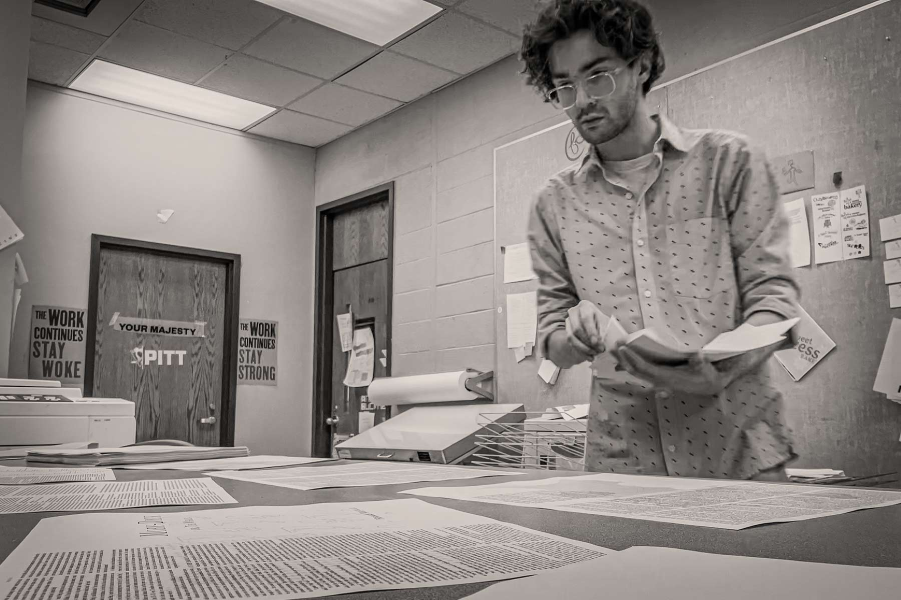

Work
The Books: A Survey of Bible Design

And

Atlas of Emotions

Moby-Dick


Hi there. I'm a graphic designer currently based in the High Country of North Carolina.
In my practice, I’m always looking for interdisciplinary opportunities to continue to build a
robust skillset, with a focus on book design and production. My work involves themes of
religion and identity, preferring complex projects that require the curation, organization, and analysis
of large amounts of content. Professionally, I’ve worked in settings ranging from alone to large collaborative
teams, undertaking projects from exhibition materials to branding for art and design professionals.
I’d love to hear from you and help solve the design challenge you’re facing. Let’s make something great.